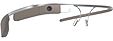

PROJECT GLASS
O Google Glass é um acessório em forma de óculos que possibilita a interação dos usuários com diversos conteúdos em realidade aumentada. Também chamado de PROJECT GLASS, o eletrônico é capaz de tirar fotos a partir de comandos de voz, enviar mensagens instantâneas e realizar vídeoconferências. Seu lançamento está previsto para 2014, e seu preço deve ser de US$ 1,5 mil. Atualmente o Google Glass encontra-se em fase de testes e já possui um vídeo totalmente gravado com o dispositivo. Além disso, a companhia de buscas registrou novas patentes anti-furto e de desbloqueio de tela para o acessório.
De simples no aparelho, vemos apenas o design básico com lentes e armação semelhantes à óculos de grau comuns. O software do dispositivo, por outro lado, ganhou uma notável melhoria: é equipado com o processador Snapdragon XR1 da Qualcomm, projetado para realidade aumentada (RA) e virtual. O Google diz que, com o poder do XR1, os novos óculos podem incorporar “visão computacional e capacidades avançadas de aprendizado de máquina”.
Google Glass
Uma nova maneira de ver o mundo.
Resolução equiv. a tela de 25"
Localizada no canto superior direito do olho direito, acompanha um alto falante.
720p para Vídeos
Ganhou um LED frontal que acende quando uma gravação de vídeo está sendo feita
Wi-Fi e Bluetooth
Conecte-se diretamente em seu Wi-Fi ou celular Android ou IOS de maneira prática
12GB
12 GB de memória utilizável sincronizada com armazenamento na nuvem
TELAS LCD | AMOLED
O vídeo de divulgação do Google mostra que você pode se transformar em uma espécie de “super-
ENTREGANDO TUDO NO ÁUDIO
A gigante das buscas usará um sistema de áudio baseado na transdução por condução. Através das hastes dos óculos, o som será transmitido para o ouvido do usuário por meio de microvibrações em determinados ossos de sua cabeça, sem usar nenhum tipo de alto-falante. Além da surpresa do áudio, a tela montada a frente do olho do usuário também chamou atenção. Serão 640 x 360 pixels de resolução que, em proporção, equivaleria a um monitor de 25 polegadas de alta definição colocado a 2,5 metros de distância do espectador.